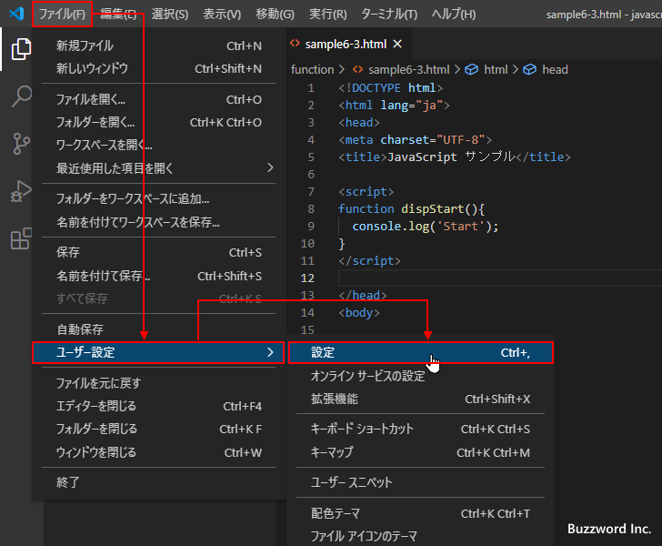
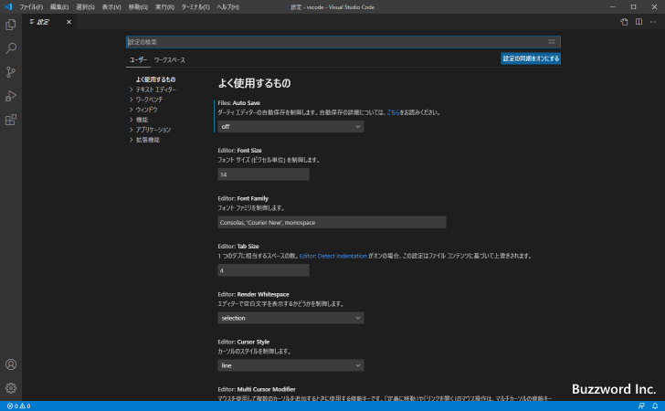
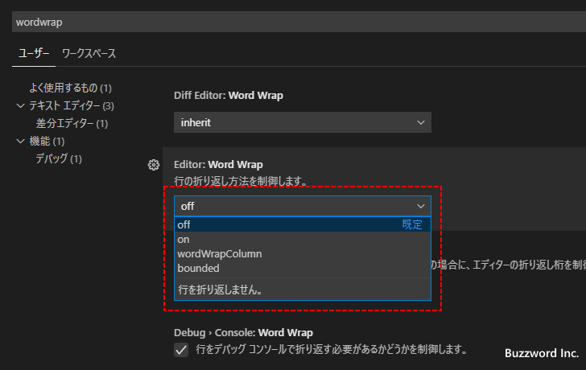

エディターでテキストを折り返して表示するかどうかの設定
Visual Studio Code のエディターでファイルを開いた場合、デフォルトの設定では折り返しは行われずに必要に応じて横スクロールバーが表示されます。ここではエディターでテキストを表示する場合の折り返しに関する設定を行う方法について解説します。
テキストの折り返しの設定
Visual Studio Code でファイルを開いた場合、エディターはデフォルトでは折り返し表示を行いません。横幅に入りきらない場合は横スクロールバーが表示されます。
エディターの折り返しに関する設定するには「ファイル」メニューの中にある「ユーザー設定」をクリックし、さらに表示されたサブメニューの中から「設定」をクリックしてください。

Visual Studio Code の設定画面が表示されます。

画面上部の検索ボックスに「wordwrap」と入力してください。いくつか設定項目が表示されますが、「Editor:Word Wrap」と「Editor:Word Wrap Column」の設定項目が関係する設定項目です。
折り返しに関する設定は「Editor:Word Wrap」で行います。次のいずれかの値を選択します。
off : 折り返さない
on : エディターの幅で折り返す
wordWrapColumn : Editor:Word Wrap Column で指定した幅で折り返す
bounded : エディターの幅または Editor:Word Wrap Column で指定した幅のどちらか狭い方で折り返す

それぞれの設定について見ていきます。
off
「Editor:Word Wrap」 を off に設定した場合は折り返しを行いません。 1 行は 1 行のまま表示し、エディターの幅で表示しきれない場合はエディターの下部に横スクロールバーが表示されます。デフォルトの設定は off です。
on
「Editor:Word Wrap」 を on に設定した場合はエディターの横幅で折り返して表示します。
wordWrapColumn
「Editor:Word Wrap」 を wordWrapColumn に設定した場合は「Editor:Word Wrap Column」で設定した幅で折り返して表示します。デフォルトでは 80 に設定されています。なお 80 の場合は半角 80 文字で折り返されるので全角文字の場合は 40 文字分です。
例として半角 50 文字で折り返すように「Editor:Word Wrap Column」の値を 50 に設定します。
エディターでファイルを表示すると、指定の文字数で折り返して表示されます。
なおエディターの横幅よりも大きい文字数が指定されていた場合は、エディターの横幅を超えて表示されたあと指定の文字数で折り返して表示されます。(スクロールバーが合わせて表示されます)。下記は半角 100 文字で折り返すように「Editor:Word Wrap Column」 の値を 100 に設定した場合です。
bounded
「Editor:Word Wrap」 を bounded に設定した場合は「Editor:Word Wrap Column」で設定した幅、またはエディターの横幅のどちらか狭い方で折り返して表示します。
例として半角 50 文字で折り返すように「Editor:Word Wrap Column」の値を 50 に設定します。
この場合、エディターの横幅よりも狭いので 50 文字のところで折り返して表示されます。
次に「Editor:Word Wrap Column」の値を 100 に設定します。
この場合、エディターの横幅よりも広いのでエディターの横幅で折り返して表示されます。
折り返しのオンとオフを簡単に切り替える
エディターでの折り返しを行うかどうかの切り替えを簡単に行うには、「表示」メニューの中にある「[右端で折り返す]の設定/解除」をクリックしてください。
クリックするたびに折り返しを行うかどうかを切り替えて表示します。
「Editor:Word Wrap」の設定が off になっていた場合は on と off を繰り返します。「Editor:Word Wrap」の設定が off 以外になっていた場合は、設定されている値と off を繰り返します。
-- --
エディターでテキストを表示する場合の折り返しに関する設定を行う方法について解説しました。
( Written by Tatsuo Ikura )

著者 / TATSUO IKURA
初心者～中級者の方を対象としたプログラミング方法や開発環境の構築の解説を行うサイトの運営を行っています。